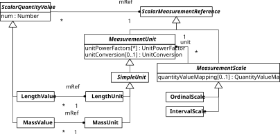
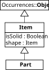
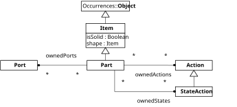
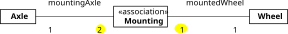

Chapter 12. Modeling the State Structure of a System
In SysML2, the state structure of a system is captured by modeling all types of items and parts the system consists of. This also includes modeling their attributes, subparts and any connections between them, as well as their ports and any interfaces between them.
SysML's state structure modeling concepts include Attributes, Enumerations, Occurrences, Items, Parts, Connections, Ports and Interfaces, as shown in the following diagram.
12.1. Attributes and Enumerations
In SysML v2, attributes (officially called "attribute usages") are data-valued features, corresponding to data-valued properties in OWL, as opposed to occurrence-valued features, such as item properties (or "usages") and part properties (or "usages"), corresponding to object-valued properties in OWL.
In the simplest case, an attribute is declared with a KerML data type as its range (such as the primitive data types String, Boolean, Integer, Natural, Rational, or Real), as in the following example:
item def Person {
attribute name : String;
attribute age : Natural;
}What is called an "attribute definition" in SysML2 is, in fact, a data type definition (defining a set of data values). In the following example, the data type NegativeInteger is defined by constraining the values of the primitive KerML data type Integer:
attribute def NegativeInteger specializes Integer {
assert constraint { that < 0 }
}Notice that the keyword that has to be used here for referring to the instances of the containing data type definition of NegativeInteger in the constraint body (see also Section 11.1).
Quantity Types and Quantity Attributes
The ISQ package of the Quantities and Units Domain Library of SysML v2 provides a number of predefined generic quantity attributes (or "attribute usages"), like for instance,
attribute length : LengthValue; attribute mass : MassValue; attribute time : TimeValue;
Notice that the domain (or featuring type) of these predefined attributes is the classifier Anything, so they are inherited by any classifier whenever the ISQ package is imported in a system model. For more on quantities and units, see Section 12.2.
Enumerations
An enumeration definition is a kind of data type that defines a (typically small) set of names as its enumerated values, like the names "male" and "female" for the two biological sexes in the following example:
enum def Sex {
enum male;
enum female;
}The declaration of an enumerated value may omit the enum keyword:
enum def Sex { male; female; }An enumeration definition can be used for declaring an attribute the values of which are limited to the defined set of enumerated values. For instance, in the following example, an instance of the item type Person must have either "male" or "female" as the value of its sex attribute:
item def Person {
attribute name : String;
attribute sex : Sex;
}
item def Female specializes Person {
attribute redefines sex = Sex::female;
}Notice how the attribute sex is bound to the specific value "female" by means of redefinition, effectively expressing the constraint that a female person is a person having the sex attribute value "female".
An enumeration definition may subclassify other data types. However, an enumeration definition must not subclassify another enumeration definition.
In the SysML spec, enumerations are considered as special kinds of variations and its enumerated values as its variants. However, there is no need for, and no gain of, such a treatment. It's preferable to simply stick to the classical view of an enumeration.
12.2. Quantity Values and Quantity Types
System models need a way to represent quantities and their measurement references (units, scales, coordinate frames) based on established international standards, in particular the International System of Quantities (ISQ), the International System of Units (SI) and the US Customary Units.
ISQ defines seven base quantity types: Length, Mass, Time, Electric Current, Thermodynamic Temperature, Amount of Substance, and Luminous Intensity.
A quantity value is defined as an ordered pair of a numerical value and a measurement reference. In the simplest case, a measurement reference is a simple unit such as the length unit "m".
For example, a length value expressed as 15 mm is of the same type (LengthValue) as a length value expressed as 0.015 m. An attribute can be initialized with a length value in the following way:
attribute width : LengthValue := 0.015 [m];
Or, using the length unit of mm:
attribute width : LengthValue := 15 [mm];
In SysML v1, a quantity value property type combines a quantity type and a unit. Consequently, using different units of the same quantity types, such as gram and kilogram, requires defining different quantity types.
Existing quantity ontologies/schemas (such as QUDT or FIBO Quantities and Units) do not support measurement scales and have only limited support for quantity dimensions, vector/tensor quantities and coordinate frames, which are needed for quantifying vectors and tensors. Interval measurement scales are needed, e.g., for time instants and durations. An example of an ordinal measurement scale is the Rockwell C hardness scale. A logarithmic measurement scale is needed, e.g., for the sound pressure level measured in dB, and a cyclic measurement scale is needed, e.g., for the rotation angle measured in angular degrees.
The Quantities and Units Domain Library of SysML v2 defines a comprehensive set of quantity concepts including the ISQ and SI concepts, the most important of which are:
- LengthValue and LengthUnit,
- MassValue and MassUnit,
- TimeValue and TimeUnit,
- ElectricCurrentValue and ElectricCurrentUnit,
- ThermodynamicTemperatureValue and ThermodynamicTemperatureUnit.

Importing SI Units and ISQ Quantity Types
For being able to use predefined units and predefined unit prefixes, such as milli, the standard library SI is imported first with all its elements. Likewise, for being able to use predefined quantity value types and predefined quantity unit types, such as ElectricCurrentUnit, the standard library ISQ is imported like so:
private import SI::*; private import ISQ::*;
In the sequel, for simplicity, these import statements will often be omitted.
Typing Attributes by Quantity Types versus Subsetting Them from Predefined Quantity Attributes
Instead of typing an attribute by an ISQ quantity type like
attribute width : LengthValue;
it can alternatively be subsetted from a corresponding quantity attribute predefined in the ISQ library:
attribute width LengthValue;
User-Defined Units
Units (such as mA for milliampere) that are not predefined in the standard library SI, have to be defined in a user model. Using unit prefixes (such as milli), which are predefined in the SI library, they can be defined like so:
attribute mA : ElectricCurrentUnit = milli * A;
Such a unit definition can then be used when defining variables highLevel in the form of an attribute as follows:
attribute highLevel : ElectricCurrentValue = 20.0 [mA];
Example: Defining the Composition of Atoms
The following example is based on a model of a PWR nuclear power plant presented in the Google Group "SysML-v2-Release". It illustrates the use of units, quantity types and quantity values (and provides an example of a constraint).
// dalton (unified atomic mass unit)
attribute Da : MassUnit = 1.66054*10^-27 [kg];
// elementary charge
attribute e : ElectricChargeUnit = 1.6*10^-19 [C];
part def Particle {
attribute mass : MassValue;
attribute charge : ElectricChargeValue;
}
part def Proton specializes Particle {
redefines mass = 1.0072766 [Da];
redefines charge = 1[e];
}
part def Neutron specializes Particle {
redefines mass = 1.008665 [Da];
redefines charge = 0 [e];
}
part def Electron specializes Particle {
redefines mass = 1/1837 [Da];
redefines charge = -1 [e];
}
part def Atom {
// an atom has up to 118 protons
part proton[1..118] : Proton;
// an atom has up to 176 neutrons
part neutron[0..176] : Neutron;
// an atom has up to 118 electrons
part electron[1..118] : Electron;
attribute mass : MassValue = proton.mass + neutron.mass + electron.mass;
// an atom must have the same number of protons and electrons
assert constraint PnE { size( proton) == size( electron) }
}12.3. Items and Parts
In SysML2, objects are called items. A part is an item that is a system or a part of a system or of another part. While parts are items that may perform actions, items that are not parts do not perform actions.
An item type definition is a kind of occurrence type definition, while an item "usage" is an item-valued property. Quantities of continuous materials (where any spatial portion is the same kind of thing) are also considered to be items. Consequently, we may have item types like Fuel or Sand.

In the following example, there is an item type definition Person and a referential (non-composite) item property driver:
item def Person;
part def Vehicle {
attribute mass : Real;
ref item driver : Person;
}A system is modeled as a part that is composed of parts, which may themselves have further composite structure. Parts may have ports that define the connection points at which those parts may be interconnected for allowing flows of signals/messages or of physical substances. Parts may also perform actions and exhibit states.

A part can represent any level of abstraction, such as a purely logical component, a physical component (with a part number), or some intermediate abstraction. Parts can also be used to represent different kinds of system components such as hardware components, software components, facilities, organizations, or users of a system.
In the following example, there are four part definitions (Engine, Wheel, Person and Vehicle), and there are three part properties (eng, wheels, and driver):
part def Engine;
part def Wheel;
part def Person;
part def Vehicle {
attribute mass : Real;
part eng : Engine;
part wheels[4] : Wheel;
ref part driver[0..1] : Person;
}Notice that item properties and part properties, such as Vehicle::eng and Vehicle::wheels in the example above, are composite features by default, while the part property Vehicle::driver is declared as a referential (non-composite) feature, which implies that the driver of a vehicle is not necessarily destroyed when the vehicle is destroyed.
A part property is typically typed by a part type, but may also be typed by an item type.
12.4. Property Value Relationships
A property value relationship (called "feature value" in the spec) is a special kind of binding connector that binds a (possibly initial or default) value to a property.
An example of a bound property value relationship, stating that a property's value is always obtained as the result of the value expression, and in this sense derived:
derived attribute averageScore : Rational = sum(scores)/size(scores);
Notice that designating a bound property value relationship as derived is not required.
An example of an initial property value relationship, stating that a property's initial value is obtained as the result of the value expression (but may be changed subsequently):
attribute count : Natural := 0;
An example of a bound property default value relationship:
attribute cutoff : Integer default = 0.75 * averageScore;
An example of an initial property default value relationship:
part engine : Engine default := standardEngine;
These different forms of property value relationships combine the definition of a property with different forms of bindings.
12.5. Connections and Bindings
A connection between two (or more) items or parts may be an abstract relationship (a link) or a concrete relationship in the form of a link object, which is an instance of an association structure, possibly having its own characteristics.
A connection type definition defines both an association (e.g., between part types) and a kind of part type that classifies connections between related things, such as items and parts. The features of a connection type that are not connection ends allow to characterize connections, as shown in the following example:
part def Hub {...}
part def Device {...}
connection def DeviceConnection {
end [0..1] part hub : Hub;
end [1..*] part device : Device;
attribute bandwidth : Real;
}A connection type often represents logical connections that abstract away details of how the involved parts are connected. For example, plumbing that includes pipes and fittings may be used to connect a pump and a tank. It is sometimes desired to model the connection of the pump to the tank at a more abstract level without including the plumbing. This is viewed as a logical connection between the pump and the tank.
Alternatively, the plumbing can be modeled as a part where the pump connects to the plumbing, and the plumbing connects to the tank. As a part itself, a connection can contain the plumbing either as a composite feature, or as a reference to the plumbing that is owned by a higher level pump-tank system context. In this way, the logical connection without structure can be refined into a physical connection.
In the following example, a binary Mounting connection type (or association) allows connecting an axle to two wheels by requiring that its population includes exactly two links for each instance of Axle linking it to two different instances of Wheel.

While all end properties of a connection type, here mountingAxle and mountedWheel, have the multiplicity 1, the multiplicities across their respective association lines, marked in yellow, are called their cross multiplicities and are expressed in-between the keyword end and the end property name in the textual notation:
part def Axle {...}
part def Wheel {...}
connection def Mounting {
end [1] part mountingAxle : Axle;
end [2] part mountedWheel : Wheel;
}Notice that the cross multiplicity [2] of the end property mountedWheel expresses the constraint that for any instance of Axle, there are exactly two Mounting links in the extent of the connection type linking the axle to two different wheels. Likewise, the cross multiplicity [1] of the end property mountingAxle expresses the constraint that for any instance of Wheel, there is exactly one Mounting link connecting the wheel to an axle.
A connection property ("usage") is a part property that is also a KerML connector, so it is typed by an association, having values that are links.
A connection usage redefines the connection ends from its definition, associating those ends with the specific usage elements that are to be connected. For example, a connection definition could have connection ends that are part usages defined by part definitions Pump and Tank. A usage of this connection definition would then associate corresponding connection ends with specific pump and tank part usages. Supposing that the pump and tank part usages have multiplicity 1, then this means that the single value of the pump usage is to be connected to the single value of the tank usage.
A connection usage that connects parts is often a logical connection that abstracts away details of how the parts are connected. For example, plumbing that includes pipes and fittings may be used to connect a pump and a tank. It is sometimes desired to model the connection of the pump to the tank at a more abstract level without including the plumbing.
In the following example, the connection property mount, which is typed by the Mounting connection type defined above, requires having exactly two values, each one representing a connection between the AxleAssembly's axle and one of its wheels:
part def AxleAssembly {
part axle[1] : Axle;
part wheels[2] : Wheel;
connection mount[2] : Mounting {
end part mountingAxle references axle;
end part mountedWheel references wheels;
}
}This syntax also allows the declaration of ternary (or n-ary) connection properties:
connection def TwoWheelsMounting {
end [1] part mountingAxle : Axle;
end [1] part leftWheel : Wheel;
end [1] part rightWheel : Wheel;
}
part def AxleAssembly {
part axle[1] : Axle;
part leftWheel[1] : Wheel;
part rightWheel[1] : Wheel;
connection mount[1] : TwoWheelsMounting {
end part mountingAxle references axle;
end part mountedLeftWheel references leftWheel;
end part mountedRightWheel references rightWheel;
}
}There are three shorthand notations for connection properties.
The related features of the connection property may be identified in a comma-separated list, between parentheses (...), preceded by the keyword connect:
connection mount[1] : TwoWheelsMounting connect ( mountingAxle ::> axle, mountedLeftWheel ::> leftWheel, mountedRightWheel ::> rightWheel )Notice that, for brevity, the symbol ::> is used here instead of the keyword references. A declaration without a name and a type allows the simplest syntax for declaring a ternary (or an n-ary) connection property:
connect ( axle, leftWheel, rightWheel )
However, this form of declaration implies that the type of connections is given by the predefined (most general) connection type Connection.
If the connection property is typed by a binary association, a further shorthand notation may be used:
connection mount[2] : Mounting connect mountingAxle ::> axle to mountedWheel ::> wheels;
Or, further simplified by leaving the redefinition of the connected features implicit:
connection mount[2] : Mounting connect axle to wheels;
A binary connection property can also be declared without a name and a type:
part def DeviceConfiguration { part hub : Hub; part device : Device; connect hub to device; }In this case, the predefined generic connection type BinaryConnection is used as its implicit type.
Binding Connections
A binding connection asserts a value equality between two different features. In KerML, bindings are binary connectors that require their source and target features to have the same values on each instance of their domain.
part def Vehicle {
part fuelTank {
out fuelFlowOut : Fuel;
}
part engine {
in fuelFlowIn : Fuel;
}
binding fuelFlowBinding
bind fuelTank.fuelFlowOut = engine.fuelFlowIn;
}In the SysML v2 spec, for terminological reasons, bindings (and successions) are redefined as special kinds of connection "usages". However, semantically, there is no need for such a redefinition. It's preferable to simply keep the KerML concept of a binding as a special kind of connector.
12.6. Ports and Interfaces
A port represents a connection point that can be connected to another port via an interface.
Ports as Connection Points
Ports are connected with each other for enabling transfers (e.g., of signals or physical quantities) between systems or their parts. The properties of a port specify what can be exchanged in such transfers.
Connected ports must conform: each feature of a port at one end of a connection must have a matching feature on a port at the other end of the connection. Two features match if they have conforming definitions and either both have no direction or they have conjugate directions. The conjugate of direction in is out and vice versa, while direction inout is its own conjugate. A transfer can occur from the out features of one port usage to the matching in features of connected port usages. Transfers can occur in both directions between matching inout features. [7.12.1]
A port type is a KerML "Structure" (object type) and, consequently, a port property ("usage"), as a non-composite feature, references port objects.
The following example illustrates how the conjugated ports FuelOutPort and FuelInPort match by having the same features with the direction of directed features being reversed:
port def FuelOutPort {
attribute temperature : Real;
out item fuelSupply : Fuel;
}
port def FuelInPort {
attribute temperature : Real;
in item fuelSupply : Fuel;
}
part def FuelTankAssembly {
port fuelTankPort : FuelOutPort;
}
part def Engine {
port engineFuelPort : FuelInPort;
}Every port definition also implicitly declares a conjugated port definition, which has the same features, except that any directed features have conjugated directions (i.e., in and out are reversed, with inout unchanged). The name of the conjugated port definition is always given by the name of the original port definition with the character ~ prepended, in the namespace of the original port definition. [7.12.3]
Thus, the example above can be rewritten in the following way:
port def FuelOutPort {
attribute temperature : Real;
out item fuelSupply : Fuel;
}
part def FuelTankAssembly {
port fuelTankPort : FuelOutPort;
}
part def Engine {
port engineFuelPort : ~FuelOutPort;
}Interfaces
An interface type is a connection type for connecting ports (that is, all of its ends are port properties). An interface property ("usage") is a connection property with values being connections between ports. Interface connections allow the flow of information, energy or matter from one port to another.
In the following example, an anonymous interface property of a DistributedSystem (without a specific type) connects a client port to a server port for allowing request-response signaling:
part def DistributedSystem {
item def Request;
item def Response;
part client {
port clientPort;
action clientBehavior {
send new Request() via clientPort;
then accept Response via clientPort;
}
}
part server {
port serverPort;
action serverBehavior {
accept Request via serverPort;
then send new Response() via serverPort;
}
}
interface client.clientPort to server.serverPort;
}Another example (based on an example presented by Michael Jastram) describes an apartment as a complex system such that a device like a toaster is connected to a power outlet via an interface:
private import SI::V;
private import SI::A;
port def PowerOutletPort {
out power :> ISQ::electricPower;
attribute voltage :> ISQ::voltage = 230 [V];
attribute maxCurrent : ISQ::ElectricCurrentValue = 16 [A];
}
port def DevicePowerPort {
in power :> ISQ::electricPower;
attribute voltage :> ISQ::voltage = 230 [V];
attribute maxCurrent : ISQ::ElectricCurrentValue;
}
interface def Device2PowerOutletInterface {
end port outletPort : PowerOutletPort;
end port devicePort : DevicePowerPort;
}
part def Apartment {
part kitchen {
port outletPort : PowerOutletPort;
}
part toaster {
port powerPort : DevicePowerPort {
:>> maxCurrent = 2 [A];
}
}
interface : Device2PowerOutletInterface
connect devicePort ::> toaster.powerPort
to outletPort ::> kitchen.outletPort;
}